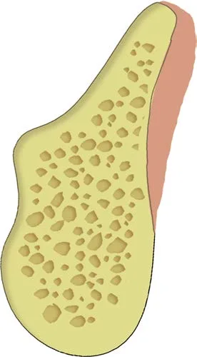
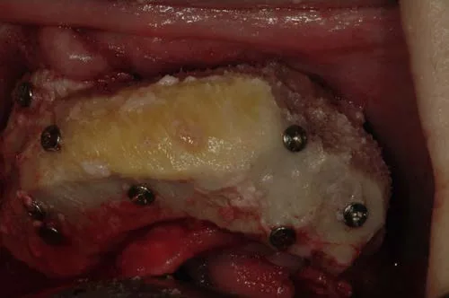

نسخه استخراجشده؛ ترجمه یا تأیید علمی انجام نشده است. وضعیت: captured
طبقهبندی Division ریج بیدندان را بر پایهی عرض و ارتفاع استخوان باقیمانده به چهار دسته تقسیم میکند. ارزشش این است که به یک زبان مشترک تبدیل میشود: وقتی میگویی «Division B»، همکارت بلافاصله میداند با چه وضعیتی طرف است و چه گزینههایی پیش رو دارد.
Division A — استخوان فراوان. عرض و ارتفاع هر دو کافیاند. این وضعیت کمی پس از کشیدن دندان شکل میگیرد و مدتی میماند — یعنی یک پنجرهی زمانی است، نه یک حالت دائمی.
Division B — استخوان بهسختی کافی. ارتفاع کافی است ولی عرض کم شده. علتش الگوی تحلیل است: عرض ابتدا به قیمت صفحهی کورتیکال فاسیال کم میشود، چون کورتیکال سمت لینگوال معمولاً ضخیمتر است.
Division C — استخوان ناکافی. دو زیرگروه دارد: C-w که عرضش ناکافی است و C-h که ارتفاعش هم افت کرده.
Division D — استخوان تحلیلرفته. تحلیل بلندمدت به از دست رفتن کامل ریج باقیمانده و آتروفی استخوان بازال رسیده است: ماگزیلای صاف، مندیبل مدادیشکل، و فضای تاجی بیش از ۲۰ میلیمتر.

یک نکتهی زمانی که همهی این طبقهبندی را بالینی میکند: تحلیل از A به B سریع اتفاق میافتد، ولی از C-w به C-h و سپس D آهسته. و رقم تکاندهندهاش این است که میزان تحلیل استخوان در سال اول پس از از دست رفتن دندان، تقریباً ده برابر سالهای بعدی است.
نتیجهی عملی: بیمار باید بداند وقتکشی هزینه دارد — و بیشترین هزینه در همان سال اول پرداخت میشود.
برای ریج Division B سه گزینه وجود دارد و هر سه معایب خودشان را دارند:
۱. استئوپلاستی — کاهش ارتفاع کرست تا به عرض کافی برسی. عیبش این است که فضای تاجی را زیاد میکند و تاج بلندتر یعنی اهرم بلندتر.
۲. ایمپلنت باریک — کاشت روتفرم کمقطر. عیبش این است که ممکن است از نظر بیومکانیکی ایدهآل نباشد.
۳. افزایش عرض با پیوند — که ایدهآلترین گزینه است، چون ایمپلنت را به شرایط اولیه بازمیگرداند.
و نکتهای دربارهی انتخاب روش پیوند: افزایش ۱ تا ۳ میلیمتر عرض معمولاً با آلوگرافت و بازسازی هدایتشده به دست میآید؛ برای بیش از ۳ میلیمتر، پیوند بلاک اتولوگ پیشبینیپذیرتر است.
